自从造天地以来，神的永能和神性是明明可知的，虽是眼不能见，但借着所造之物就可以晓得，叫人无可推诿。因为他们虽然知道神，却不当做神荣耀他，也不感谢他，他们的思念变为虚妄，无知的心就昏暗了。
——《圣经》
最近，一位朋友向我推荐了一部很美的电影，名字叫做《日为吾兄 月为吾妹》。
这个名字听上去就很美！！
不仅名字美，海报也非常美。
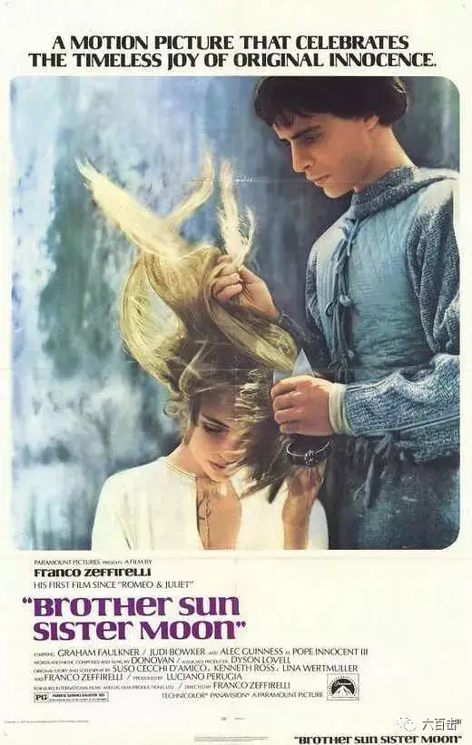
怀着期待刷完后，我发现这部电影真的很美，电影曾被提名为奥斯卡最佳艺术指导奖，豆瓣评分高达8.4。
故事发生在意大利的阿西西，电影中的每个画面都像一幅画，让我想起了以神圣、崇高、肃穆的画面而著称的佛罗伦萨画派。
该片的摄影师曾经和德.西卡合作过奥斯卡最佳外语片《悲惨的青春》，极其擅长柔光、背光摄影，是当时很多意大利女星的御用摄影师，本片也为他带来了最佳摄影的银色丝带奖。
不仅仅画面美，电影在表达主人公敏感复杂的内心世界时，采用了大量民谣风的音乐去表现。
这些美丽动人的音乐是由奥托拉尼和多诺万完成。
奥托拉尼曾为许多电影做过配乐工作，包括昆汀.塔伦蒂诺的《杀死比尔》，他也曾获得格莱美奖以及世界音乐学院的终身成就奖。
而多诺万更是与披头士乐队同时期的著名苏格兰歌手，曾传授过约翰.列侬指弹吉他的风格，本片中的歌曲都是由他演唱。
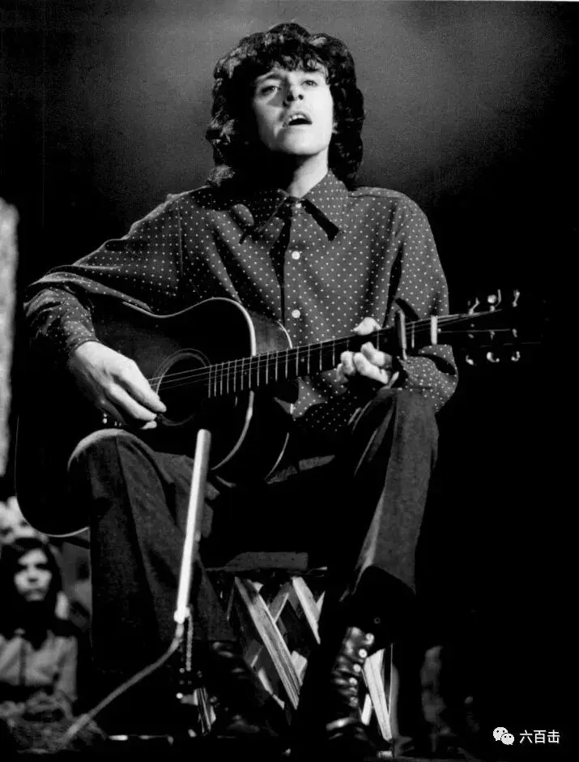
多诺万
电影中最著名的《a simple song》是由曾长期担任纽约爱乐乐团音乐总监的伦纳德·伯恩斯坦创作，这段音乐后面也被用在他创作的弥撒曲中。
除了美丽的画面和音乐，电影更是描述和表现了信仰之美。
整部电影就仿佛是一只沐浴在造物主奇妙创造恩典之下的快乐小鸟，充满了得享自由的激情。
01 被战争灼伤的弗朗西斯科
电影是以意大利阿西西的圣方济各为原型创作的，讲述了他年轻时期的故事。
方济各原来的名字叫做弗朗西斯科，他的父亲是当时富有的纺织商，极度贪婪钱财，在父亲的溺爱下，弗朗西斯科成为了一个傲慢、嚣张的年轻人。
当时正处于十字军东征时期，能够上战场杀敌成为了当时许多年轻人的志向，弗朗西斯科和他的朋友也加入其中，成为了十字军的一员。
阿西西的人民为他们的勇敢感到骄傲，大家高兴地为他们送行。
贪婪的父亲，也不忘叮嘱儿子趁着战争去搜刮别人的钱财。
可是恐怖的战争让弗朗西斯科得了一种怪病，他不得不从战场中逃回了阿西西。
伴随着低沉的鼓点，悲伤绝望的独白歌声响起：
哦！ 多么悲伤的鼓声 我亲爱的恋人
就和我此时的愁绪一致
那个懒羊羊的春日里我注视的爱人的眼睛
现在又在何方
冰冷的战场上绿草枯死
尸体腐臭令我反胃
我浑身湿透着睡着
驱虫钻进我的面包
周围都是垂死之人的呻吟
旧日的苹果树绿草葱郁
春天的花朵芬芳甜蜜
你柔软的头发 你眼里的微笑
用细长的草叶编成戒指
温暖的面包 凉爽的地窖
伴着清晰涓流的小溪
粗糙的编织床单散发温暖干净的气息
儿歌的欢笑萦绕在耳边
哦 多么悲伤的鼓声 我亲爱的恋人
就如我此时的愁绪一致
那个懒羊羊的春日我注视的爱人的眼睛
此时又在何处
那个懒洋洋的春日里
弗朗西斯科彻底地病了。
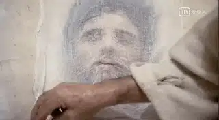
战争的残酷让他痛苦，悲伤绝望的面孔总是在他的心头挥之不去，一下子，过往他曾麻木目睹过的人间惨剧今日却仅仅抓着他不放。
他只能将眼睛定睛在大自然中，在父母的惊愕中，他长时间地看着花鸟树木。
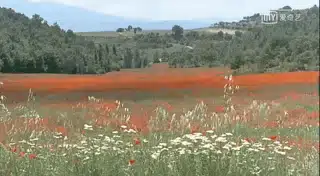
甚至当他看到小鸟时，他站在屋檐上，模仿着小鸟的动作，仿佛想要变成一只快乐的小鸟。
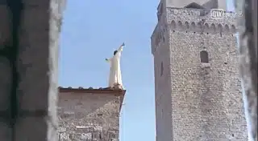
02、被释放的弗朗西斯科
沐浴在造物主奇妙的创造之下，弗朗西斯科慢慢地恢复过来，此时的他开始不愿意走父亲为他安排的道路，成为一个贪得无厌的中产阶级。
第一次，这位大财主的儿子，来到自家的地下室去看那些纺织工人的工作环境，他被眼前的场景所震惊。
处于花季的少女却每天工作在乌烟瘴气之下，看到富家少爷时，充满了自卑和苦楚的眼神到处在躲闪。
在暗无天日的环境中，小孩的啼哭让弗朗西斯科心痛。
苦难仿佛染料一样永远地浸染在这些人的身上，他们的眼里看不到任何希望。
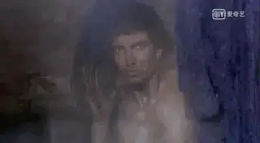
弗朗西斯科握着老人的手，带着大家离开地下室，在阳光下感受上帝的创造。
这引起了父亲的愤怒，弗朗西斯科遭到父亲一阵的毒打。
第二天在教堂里，痛苦的弗朗西斯科凝视着教堂中的十字架，忽然意识到耶稣也是处于贫穷，贞洁和顺从之中 。
信仰让弗朗西斯科看到了出路，他得到了彻底的更新。
他立刻冲回自己的家中，将贵重的衣服从窗中丢出去，他要抛开一切世俗财富对自己的束缚。
他激动的告诉父亲，你也应当这样，不应该被贪婪和财富捆绑。
看着自己苦心经营的财富被儿子丢在外面，被人哄抢，父亲气急败坏，拖着弗朗西斯科到法官那里，请求法官将他处死。
在众人和主教的面前，弗朗西斯科深情地告别了所有属于世界的财产和他的中产阶级家庭。
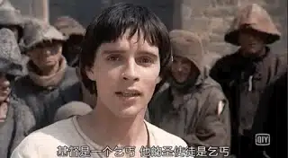
弗朗西斯科告诉主教，他获得了重生，之后他脱去了他的华丽服装，离开了他的过去，赤裸裸地离开阿西西。
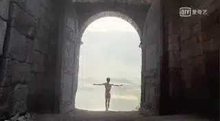
弗朗西斯科回到在大自然的美丽中，快乐的歌声响起：
日为吾兄，月为吾妹
我很久没有沐浴在你的恩惠中
我只自私关注自己的苦难
风为吾兄 气为吾妹
让我睁开眼睛
赐予我纯洁和公平的视野
使我可以看到身边神的荣耀
我是神的造物 我是他的一部分
我感觉他的爱唤醒了我的心
日为吾兄 月为吾妹
我现在沐浴在你的恩惠中
我沉浸在爱中
一切都属于我
我是神的造物
我是他的一部分
我感觉他的爱唤醒了我
03 重建基督的“教堂”
弗朗西斯科来到圣达米亚诺教堂的废墟，在那里他听到神的声音，要求他“恢复我的教会”。
弗朗西斯科便开始用一块块的石头重建这个教堂，许多居无定所的穷人纷纷加入到教堂的重建中。
弗朗西斯科之前的好友也怀着好奇来找他，当他们看到，这间破败的教会却拥有承载穷人的能力时，他们知道比起阿西西城内富丽堂皇的教堂，这里更像基督的教会。
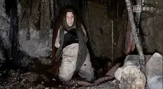
这些被震撼的朋友纷纷追随弗朗西斯科，一起重建教堂。
从开始一直关注弗朗西斯科的美丽女孩克莱尔，也被他们对于信仰的追求激励，也加入其中。
他们效法耶稣，一起用爱心和谦卑帮助贫穷者，医治患病者。
教会从坚实的“磐石”之上得以建立，大家一起唱起电影中那首著名的《a simple song》来一同将荣耀归于上帝：
如果你想构建梦想
一定要缓慢坚定
一步一个脚印成就伟大
虔诚的工作才能达到目的
如果你想自由生活
一定要放缓脚步
做事不求多 但求精
简单的快乐是神圣的
一天一天 ，一块一块石头
慢慢构建你的秘密
一天一天 你也会成长
你会明白神的荣耀
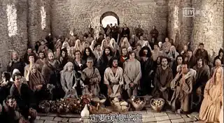
04 弗朗西斯科的疑问
真信仰一定会带来真正的吸引力，平时在阿西西不受待见的边缘人都来到了弗朗西斯科的教会。
阿西西城内的教会只有零零散散的一些富人，除了富丽堂皇，那里好像什么都没有了。
出于嫉妒，主教命人焚毁了弗朗西斯科的教会，一人为了守护教会而被打死。
闻讯赶来的弗朗西斯科非常痛心，他感慨，人类对待自己的同胞何以会如此狠毒。
这也引起了弗朗西斯科对于自己的疑问，他问自己：
发生这样的事情，是不是我做错了什么
弗朗西斯科想要知道问题的答案，于是起身前往梵蒂冈，想要找教皇来解达自己心中的疑问。
可是像乞丐一样的弗朗西斯科要见到教皇谈何容易，幸好，昔日的朋友保罗想到一个主意。
他告诉罗马教廷，来自阿西西的隐士弗朗西斯科等人要向教皇问安。
为此，保罗为弗朗西斯科写了一封辞藻华丽的赞美信，让弗朗西斯科到时候照着读就可以。
当弗朗西斯科进入罗马教廷后，这里的奢华让他看不到一点基督的影子，主教们虽然穿着华丽，脸上却看不到一丝慈爱。
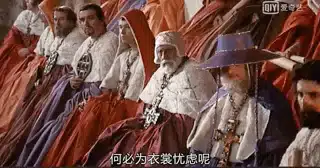
弗朗西斯科痛苦地读了几句信中的话后，他放下了书信。
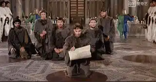
他歇斯底里地讲着耶稣的教训：
你们看那天上的飞鸟，也不种，也不收，也不积蓄在仓里，你们的天父尚且养活它。你们不比飞鸟贵重得多吗？
你们哪一个能用思虑使寿数多加一刻呢？
何必为衣裳忧虑呢？你想：野地里的百合花怎么长起来；它也不劳苦，也不纺线；
然而我告诉你们：就是所罗门极荣华的时候，他所穿戴的，还不如这花一朵呢！
你们这小信的人哪！野地里的草今天还在，明天就丢在炉里， 神还给它这样的妆饰，何况你们呢！
所以，不要忧虑说：‘吃什么？喝什么？穿什么？’
这都是外邦人所求的。你们需用的这一切东西，你们的天父是知道的。
你们要先求他的国和他的义，这些东西都要加给你们了。
即使弗朗西斯科讲的话完全来自圣经，主教们心里听着却不是个滋味，他们非常生气：
他竟然敢用福音书教训我们
随后，主教派人将弗朗西斯科等人驱逐出去。
这时，教皇仿佛梦中惊醒一般，他命令别人将弗朗西斯科等人带回教廷，年迈的教皇一步一步从楼梯走向弗朗西斯科。
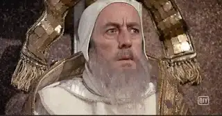
他告诉弗朗西斯科：
我们虽然拥有财富和权利，而你却一贫如洗.......我们应该感到羞愧
弗朗西斯科向教皇提出自己的疑问，“我们的真理，为什么却不能成为别人的祝福”。
对于弗朗西斯科的问题，教皇没有正面回答，而是俯下身子亲吻了弗朗西斯科的脚。
教皇为弗朗西斯科献上了真诚的祝福，鼓励他广传福音，教皇用爱和鼓励回应了他的疑惑。
这部电影的情节并不复杂，所以结构处理的也比较松散，导演将表现的重点放在了弗朗西斯科的内心世界，再加上美丽的歌曲和画面，铸就了这样一部特殊的作品。
当然，电影的缺陷也比较明显，很多地方处理的太过于简单，导演为了增强戏剧性，更是夸大了阿西西主教和罗马教廷的奢华。
在真实的历史中，阿西西主教给予了弗朗西斯科很大的帮助，而罗马教廷更不可能集聚200位神职人员去接待弗朗西斯科。
但是，无论如何，这都瑕不掩瑜。
最后需要提醒大家的是，这部电影描述的是12世纪意大利的故事，当时天主教教堂中采用的是拜占庭艺术下的耶稣画像，并不是我们现在单纯的十字架。
因此，观影中，我们需要放回当时的历史处境去观看这部电影，否则有些地方会觉得很奇怪。
比如说，弗朗西斯科展现出来的禁欲主义，以及他对于物质和财富的偏颇认识，也直接与他当时所处的时代有关。
因为每个时代都有他们要面对的征战，弗朗西斯科面对的是当时人们安于拥有的财富而对信仰麻木的挑战，所以弗朗西斯科跟从耶稣所要击碎的偶像是对财富的迷恋。
他挑战拥有财富但却对穷人冷漠的富人，是否愿意因为信仰的缘故去放弃财富，去谦卑地服侍贫穷的人，因此他的思想有很强的禁欲主义倾向，我们需要放在具体的处境中去看待和分辨弗朗西斯科的思想。
当然，令人鼓舞的是，上帝赐给弗朗西斯科很大的恩典，让他完成了“比骆驼穿过针眼都难”的事情，那就是放弃自己所有的财富，去跟随耶稣，这是这部电影最美的地方。

关注并回复：太阳和月亮
获取电影资源
相关推荐：
100双绝望的眼睛
《芳华》| 他那么好却被伤的如此之深
《潜行者》 | 这是全人类绝无仅有的电影了
《乡愁》 | 没有一个人能够将信仰拍的如此诗意和凝重
这部由罗伯特·德尼罗主演的宣教士电影，同时收获了奥斯卡和金棕榈大奖
这里没有挑逗你眼目情欲的小鲜肉
也没有挑动你肉体情欲的段子
更没有膨胀你今生骄傲的鸡血
我们只在乎那些最质朴真诚的作品
在那里我们才能恢复真正的想象力
我们也坚信这才是我们真正需要的

ID:Six_hundred_hits
长按二维码，一键关注
【六百击】
-END-
电影评论
尽情分享朋友圈

苹果打赏通道